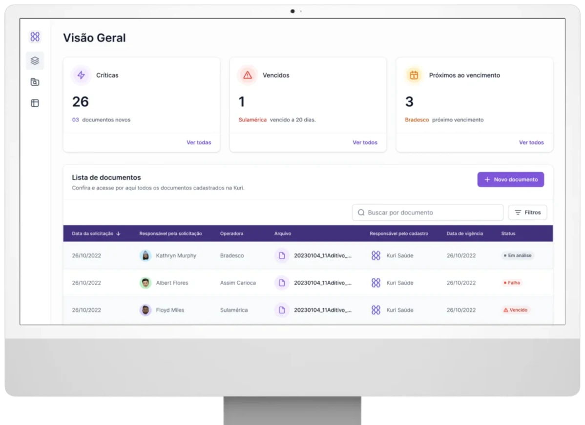

Kuri Saúde · 2023
Turning thousands of pages of insurer contracts into usable data.
Hospitals rely on pricing tables and negotiation rules from insurers to resolve claim denials, but those documents arrive as paper or inconsistent PDFs. I co-led AI adoption at Kuri Saúde and built the OCR and LLM pipeline that cut review time by 90%.

- 90%less time spent reviewing documents
- 80%lower operational costs
- 10K+pages processed in under 5 days
- 3 + 10hospitals and insurers using it
The problem
Hospitals receive thousands of pages of pricing tables and negotiation rules from insurers. That data is critical for resolving claim denials (glosas), but most documents arrive on paper or as inconsistent PDFs, so analysts extract the information by hand.
The result: slow reimbursement cycles, high operational costs, and lost revenue.
The opportunity
An AI system that converts unstructured hospital documents into clean, usable data, so analysts can review reimbursement cases faster and more accurately.
My role
Product strategy
Scoped the problem, aligned constraints, and defined the requirements for an AI-powered revenue-cycle automation system.
AI systems
Researched, selected, and tested OCR and LLM approaches, designed the extraction pipeline, and validated it with real hospital data.
Workflow and prototyping
Mapped operations, designed streamlined review flows, and built interactive prototypes to test usability and output quality.
The pipeline
- Reads thousands of pages in minutes.
- Flags expired or risky rules before they cost money.
- Structures documents into clean tables and centralizes information by insurer.
- Powers a new internal dashboard for analysts.
What I learned
Infrastructure and models are product decisions. Choosing OCR tools, LLMs, and the extraction pipeline wasn't a back-end detail. It defined speed, reliability, and what the interface could promise. I learned to treat those choices as core product levers, not technical afterthoughts.
Next project